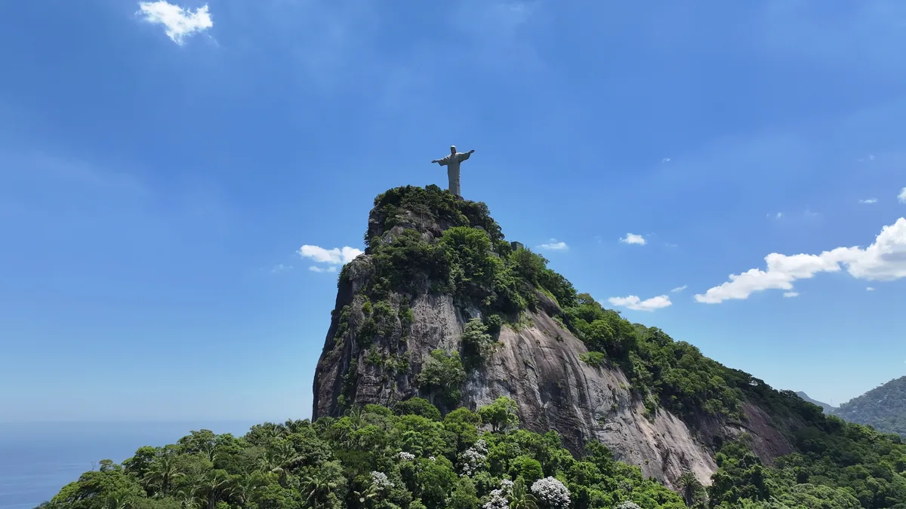

Início › Destinos › Rio de Janeiro › Cristo Redentor
Cristo Redentor: ingresso, preço e as 5 formas de subir
Quanto custa cada jeito de chegar ao alto do Corcovado, de onde sai cada um, o horário que faz perder o dia e a obra que reduziu os ingressos à metade. Preços consultados em 13/set/2026.
Apurado por Allan Vitor · @viagemnalupabr (abre em outra aba)

Storyblocks · licença royalty-free · SBI-349602547
As quatro escadas rolantes que levam ao mirante estão desligadas desde 3 de agosto de 2026, para serem trocadas. Sem elas, cabe metade das pessoas lá em cima ao mesmo tempo — e por isso o parque passou a vender metade dos ingressos. A obra vai até o fim de maio de 2027. Na prática: o ingresso esgota dias antes, então compre com antecedência e só por canal oficial. E, enquanto as escadas não voltam, quem sobe encara 80 degraus de pedra do 2º piso até o platô do Cristo; o ICMBio disponibiliza 5 carros e 5 cadeiras escaladoras para mobilidade reduzida. Fonte: Parque Nacional da Tijuca / ICMBio.
Quanto custa cada forma de subir
| Forma de subir | Adulto | Desconto e observação |
|---|---|---|
| Van oficial saindo das Paineiras | R$ 87 | adulto R$ 87 (≈ US$ 17); criança 7–11, estudante, 60+, PcD e acompanhante R$ 60; até 6 anos grátis. |
| Van oficial saindo de Copacabana ou Largo do Machado | R$ 132 | adulto R$ 132 (≈ US$ 26); categorias com desconto R$ 105. |
| Trem do Corcovado | R$ 134 | adulto R$ 134; criança 7–11, estudante, PcD e ID Jovem R$ 107; idoso 60+ brasileiro R$ 70; até 6 anos grátis no colo. |
| A pé pela trilha (só o acesso ao monumento) | R$ 60 | adulto R$ 60; estudante, 60+ e PcD R$ 33; descida de trem R$ 37. |
| Com guia autorizado | R$ 185 | R$ 185 adulto, R$ 159 nas categorias com desconto. |
Fontes: parquenacionaldatijuca.rio (ICMBio) e tremdocorcovado.rio, consultados em 13/set/2026. Preço único o ano todo — a tabela em vigor acabou com a diferença entre alta e baixa temporada. O que muda o valor é o ponto de embarque, não a data.
Não existe tarifa de morador do Rio aqui — o programa Tarifa Carioca não cobre o monumento. Os descontos são só por idade, estudante, PcD e ID Jovem.
De onde sai cada subida
Monumento: Alto do Corcovado, dentro do Parque Nacional da Tijuca. O acesso é sempre por um dos três embarques: Centro de Visitantes Paineiras (Estrada das Paineiras, s/nº), estação do Trem do Corcovado (Rua Cosme Velho, 513, Cosme Velho), ou os pontos de van em Copacabana (Praça do Lido, ponta do Leme) e Largo do Machado (em frente à Igreja Nossa Senhora da Glória, colada ao metrô). A estação de Cosme Velho tem fachada histórica e fila visível na calçada.
Ver no mapa
Largo do Machado — Linha 1, menos de 3 minutos a pé do embarque das vans, que fica na própria praça. Cardeal Arcoverde — Linha 1 para quem embarca na Praça do Lido, em Copacabana. Para o Trem do Corcovado: Largo do Machado e depois ônibus pela Rua das Laranjeiras/Cosme Velho, ou táxi — a estação fica a cerca de 2 km do metrô.
Horários e quando o acesso fecha
Não há dia fixo de fechamento semanal. Abre todos os dias, inclusive feriados, Natal e Ano-Novo. O risco real é o clima: o Parque Nacional da Tijuca registra que “em casos excepcionais o PNT poderá ser fechado à visitação”, e o Trem do Corcovado avisa que os horários mudam sem aviso prévio. Chuva forte, vento e neblina suspendem o acesso, e o reembolso automático não é garantido — no verão carioca, de dezembro a março, isso é comum.
Os horários que fazem perder o dia: embarques de Copacabana e Largo do Machado das 7h às 16h; Centro de Visitantes Paineiras das 7h30 às 18h, com última entrada às 17h; Trem do Corcovado das 8h às 18h, saídas a cada 20 minutos; venda de ingresso para quem sobe por trilha das 8h às 17h (Protocolo Operacional da Visitação, vigente desde 2/mar/2026). Quem chega às 16h05 no Largo do Machado perdeu a visita.
Carro particular não sobe. A Estrada do Redentor é fechada a veículos motorizados 24 horas por dia, e não há estacionamento no monumento. Só van oficial, trem, guia autorizado ou trilha.
Quando ir
Não existe estatística oficial mês a mês — nem o ICMBio nem o parque publicam a série. Sem dado mensal O que dá para dizer com número verificado é o clima: julho é o mês mais frio (mínima média 15 °C, máxima 25 °C) e julho e agosto são os mais secos (37 mm e 35 mm de chuva), o que aumenta muito a chance de céu limpo no alto — fator decisivo aqui (Climatempo, climatologia de 30 anos). A ressalva honesta: julho é mês de férias escolares brasileiras, então o movimento sobe. Maio e junho reúnem tempo seco e calendário vazio.
O monumento
Inaugurado em 12 de outubro de 1931. Idealização do engenheiro brasileiro Heitor da Silva Costa, escultura de Paul Landowski, cálculo estrutural de Albert Caquot, rosto e mãos de Gheorghe Leonida, colaboração de desenho de Carlos Oswald. São 30 m de estátua, 38 m com o pedestal, 28 m de envergadura e 1.145 toneladas de concreto armado revestido de pedra-sabão, construídos entre 1922 e 1931 com peças produzidas na França. Restauração ampla em 1990; escadas rolantes e elevadores em 2003; grande restauro em 2010 com 60 mil peças de pedra-sabão; eleito uma das Novas Sete Maravilhas do Mundo em 7 de julho de 2007.
Mais de 2,8 milhões no Alto Corcovado em 2025, contra 2,3 milhões em 2024. O Parque Nacional da Tijuca inteiro recebeu 4.907.563 visitantes em 2025, recorde histórico e o parque nacional mais visitado do Brasil. Fonte: ICMBio, via Agência Brasil (abr/2026) e ((o))eco (13/abr/2026).
- O rosto não é do escultor principal. Paul Landowski assinou a escultura, mas a cabeça e as mãos foram modeladas pelo romeno Gheorghe Leonida.
- Foi pago por doação popular: a obra custou o equivalente a US$ 250 mil da época e foi financiada pelo Círculo Católico do Rio de Janeiro com doações de fiéis, não com dinheiro público.
- Leva raio. Há danos documentados em 2008 e 2014, que exigiram reposição de pedra-sabão nos dedos e na cabeça.
O Centro de Visitantes Paineiras é o antigo Hotel Paineiras, na Estrada das Paineiras, no meio da mata. A estação do trem fica no pé do morro, em rua estreita e arborizada. Do alto, os marcos que orientam a vista são a Lagoa Rodrigo de Freitas, o Pão de Açúcar, o Maracanã, a Baía de Guanabara e a Ponte Rio–Niterói.
Perto dali
Largo do Boticário, em Cosme Velho, a poucos minutos a pé da estação do trem. Parque Lage, vizinho pela mata — é de lá que sai a trilha do Corcovado. Vista Chinesa e Mirante Dona Marta, no mesmo maciço. Bairro das Laranjeiras e Palácio Guanabara, descendo a Rua das Laranjeiras. Sem distância oficial o parque não publica tempos a pé.
O que mais se pergunta sobre o Cristo Redentor
Qual é o jeito mais barato de subir ao Cristo Redentor?
A pé pela trilha (só o acesso ao monumento): R$ 60 o adulto, só o acesso ao monumento. Com transporte, a van oficial saindo das paineiras custa R$ 87; a mesma van saindo de Copacabana ou do Largo do Machado custa R$ 132.
Tem desconto para morador do Rio no Cristo Redentor?
Não existe tarifa de morador do Rio aqui — o programa Tarifa Carioca não cobre o monumento. Os descontos são só por idade, estudante, PcD e ID Jovem. O que muda o preço é o ponto de embarque: R$ 87 nas Paineiras contra R$ 132 em Copacabana ou no Largo do Machado, R$ 45 de diferença pela mesma subida.
Até quando vai a obra no Cristo Redentor?
Até o fim de maio de 2027. as quatro escadas rolantes que levam ao mirante estão desligadas desde 3 de agosto de 2026, para serem trocadas. Sem elas, cabe metade das pessoas lá em cima ao mesmo tempo — e por isso o parque passou a vender metade dos ingressos. A obra vai até o fim de maio de 2027. Na prática: o ingresso esgota dias antes, então compre com antecedência e só por canal oficial. E, enquanto as escadas não voltam, quem sobe encara 80 degraus de pedra do 2º piso até o platô do Cristo; o ICMBio disponibiliza 5 carros e 5 cadeiras escaladoras para mobilidade reduzida. Fonte: Parque Nacional da Tijuca / ICMBio.
Dá para subir ao Cristo Redentor de carro?
Carro particular não sobe. A Estrada do Redentor é fechada a veículos motorizados 24 horas por dia, e não há estacionamento no monumento. Só van oficial, trem, guia autorizado ou trilha.
Qual é o horário do Cristo Redentor?
Os horários que fazem perder o dia: embarques de Copacabana e Largo do Machado das 7h às 16h; Centro de Visitantes Paineiras das 7h30 às 18h, com última entrada às 17h; Trem do Corcovado das 8h às 18h, saídas a cada 20 minutos; venda de ingresso para quem sobe por trilha das 8h às 17h (Protocolo Operacional da Visitação, vigente desde 2/mar/2026). Quem chega às 16h05 no Largo do Machado perdeu a visita.
As outras páginas do Rio de Janeiro
Hospedagem
O ingresso compre só no canal oficial: com a obra, ele esgota dias antes. A hospedagem e a passagem não entram nos preços desta página; a ficha de custos traz as duas, com a data da apuração.
Este link dá comissão ao site. Você paga o mesmo preço que pagaria indo direto, e a comissão não altera nenhum número do site. Como isso funciona.